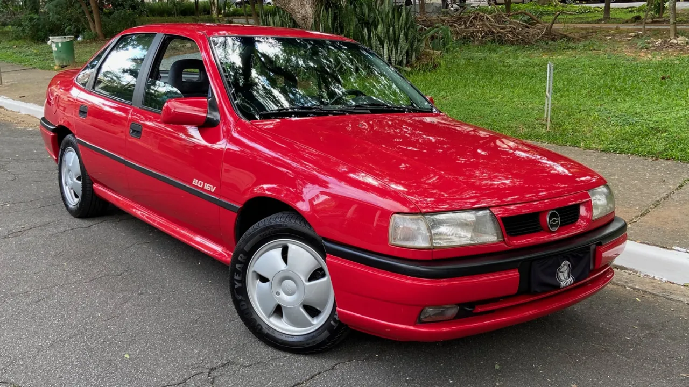
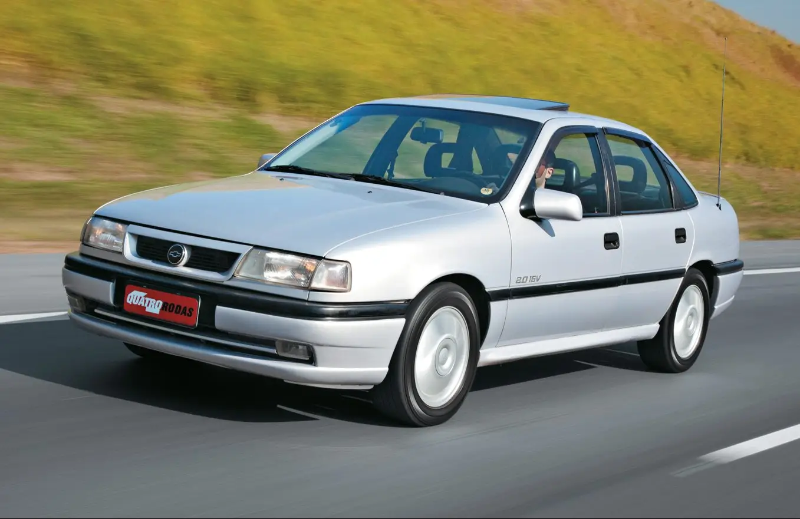
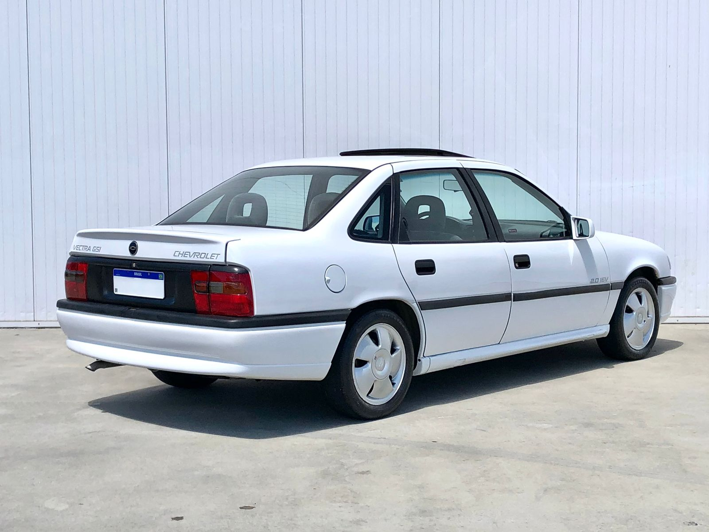

VECTRA GSI
Com sua elegância esportiva e engenharia alemã, o Vectra GSi foi a máquina discreta que entregava alta performance e tecnologia, marcando sua era com classe e velocidade.

HISTÓRIA
O Vectra foi lançado no velho continente em 1988. Ele chegou por aqui em três versões: GLS, CD e a esportiva GSi. Sem dúvida nenhuma esta última conseguia reunir um conjunto mecânico excepcional, com lendário C20XE, além de um design que foi referência em termos de coeficiente aerodinâmico.
A versão GSi trazia as rodas de 15 polegadas com desenho muito próprio. Além disso o aerofólio discreto na tampa traseira e um padrão de adesivos que fez história. O seu estilo até um pouco discreto escondia um desempenho avassalador para os anos 90.
Uma de suas características mais interessantes era o seu motor C20XE, ao qual me referi dois parágrafos acima. Ele também é usado por outros esportivos e sangue quente da Opel, como o Calibra. Com seus 150 cv aspirado entregava força e subia de giro rapidamente trabalhando em conjunto com um excelente câmbio de cinco velocidades.
Essa combinação explosiva, no melhor sentido da palavra, fez dele o carro mais rápido do Brasil em 1993 atingindo quase 200 km/h.
FICHA TECNICA
Modelo: Vectra GSI
Ano: 1997–1999
Motor: 2.0 16V MPFI
Potência: 150 cv
Torque: 18,3 kgfm
0–100 km/h: 9,5 s
Vel. Máx: 206 km/h
Peso: 1.215 kg
Tração: Dianteira
Câmbio: Manual 5 marchas
Dimensões (C×L×A): 4.480×1.707×1.420 mm
CURIOSIDADE
Esse motor, conhecido como "Red Top" na Europa por sua tampa de válvulas vermelha, era uma joia da engenharia da Opel (matriz alemã da Chevrolet). Ele entregava 150 cavalos de potência e era famoso pela sua robustez e por ter um comando de válvulas que entregava força em altas rotações. A Chevrolet o trouxe para o Brasil no Vectra GSi, fazendo dele um dos carros nacionais mais potentes e tecnológicos de sua época, capaz de acelerar de 0 a 100 km/h em cerca de 8,5 segundos – um número impressionante para um sedã familiar esportivo. Essa combinação de discrição com performance o tornava um "lobo em pele de cordeiro"
GALERIA
Imagens do Vectra GSI




Canal: Diego Tribst